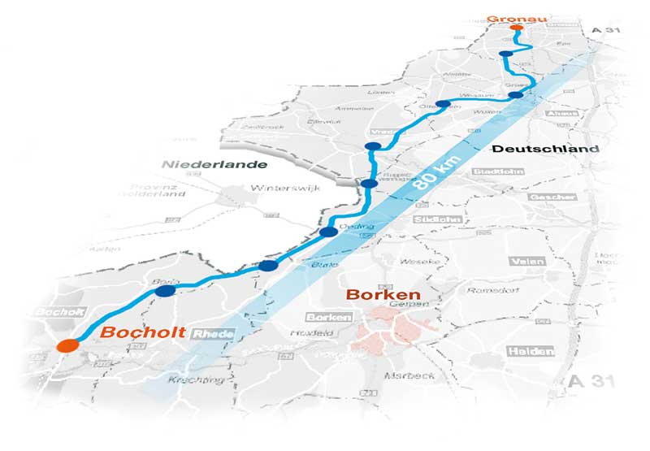
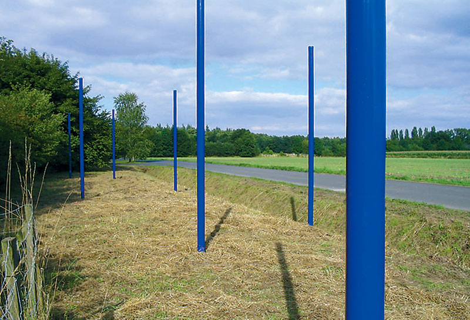
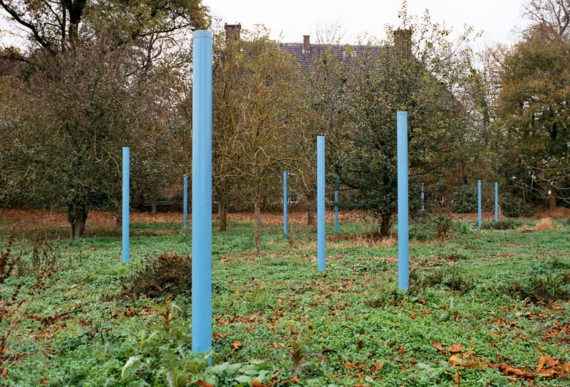
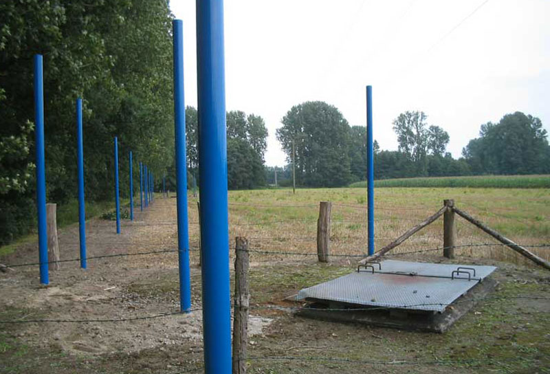

<!DOCTYPE html>

<html>
<head>
  <meta name="generator" content="HTML Tidy for HTML5 (experimental) for Mac OS X https://github.com/w3c/tidy-html5/tree/d193420">
  <meta http-equiv="Content-Type" content="text/html; charset=utf-8">
  <meta name="Author" content="Franz John">
  <meta name="Publisher" content="Franz John">
  <meta name="Copyright" content="Franz John">
  <meta name="Keywords" content="Franz John, Salt Axis, Salztangente, Radweg, Stabfeld, salz, skulptur, media art, Skulptur-Biennale Münsterland 2005">
  <meta name="Description" content="FRANZ JOHN - DIE SALZTANGENTE. Kunstprojekt, Skulptur-Biennale Münsterland 2005. Radweg, Stabfelder, Klicken Sie auf die Wegepunkte">
  <meta name="Abstract" content="FRANZ JOHN, Kunstkompatible Projekte; Intermedia Art; Projects: Military Eyes; Sky Nude; Balt Orient Express; Die kopierte Galerie; Com Trust; Turing Tables">
  <meta name="page-topic" content="Kunst, Kultur, Culture, Art">
  <meta name="audience" content="Alle">
  <meta name="Robots" content="INDEX,FOLLOW">
  <meta name="language" content="de">

  <title>Franz John - Die Salztangente | Salt Axis</title>
  <script type="text/javascript" src="js/jquery.min.js">
</script>
  <script type="text/javascript" src="js/jquery.slideViewerPro.1.5.js">
</script>
  <script type="text/javascript" src="js/galleria-1.2.6.js">
</script>
  <link rel="stylesheet" href="css/lightbox.css" type="text/css" media="screen">
  <link rel="stylesheet" href="css/svwp_style.css" type="text/css" media="screen">
  <link type="text/css" rel="stylesheet" href="js/classic/galleria.classic.css">
  <script>
    $(window).bind("load", function() {
    $("div#salztangente-slider").slideViewerPro({
        thumbs: 12, 
  //        autoslide: true, 
        asTimer: 3500, 
        typo: true,
        galBorderWidth: 0,
        thumbsBorderOpacity: 0, 
        buttonsTextColor: "#707070",
        buttonsWidth: 40,
        thumbsActiveBorderOpacity: 0.8,
        thumbsActiveBorderColor: "#0a3597",
        shuffle: false
    });
  });


  Galleria.loadTheme('js/classic/galleria.classic.min.js');

  /*  $("#galleria").galleria({
                width: 600,
                height: 600
            });*/
    
  </script>
  <style>

  #mainsection aside {
    left: 820px;
    top: 150px;
    position: absolute;
    width: 250px;
    z-index: 100;
  }

  #mainsection aside h1 {
    font-family: "garamond,sans-serif";
    font-style: italic;
  }

  </style>
</head>

<body>
  <section id="mainsection">
    <div id="galleria"></div>

    <aside id="galleria-aside"></aside>
    <script>
      $.getJSON("images.json", function(d) { console.log(d); var data = d;

    $('#galleria').galleria({
    dataSource: data,
                  width: 800,
                height: 544
                  });

    Galleria.ready(function(options) {

    // this = the gallery instance
    // options = the gallery options

    this.bind(Galleria.IMAGE, function(e) {
      //      console.log(e.index);
        var contents = data[e.index].aside;
        if (contents)
        $("#galleria-aside").html(data[e.index].aside);
        else
        $("#galleria-aside").html("");
      //Galleria.log(this) // the image index
      //Galleria.log(e.imageTarget); 
    });
    });
 });

    </script> <!--div id="gallery">
        <a href="#"></a>
        <a href="#"></a>
        <a href="#"></a>
        <a href="#"></a>
      </div-->
  </section>

  <div id="bg"></div>

  <div id="Sitelogo"></div>

  <div id="Standort1">
    <a href="images/bild1.jpg" rel="lightbox[roadtrip]" title="Standort 1"></a>
  </div>

  <div id="Standort2">
    <a href="images/bild2.jpg" rel="lightbox[roadtrip]" title="Standort 2"></a>
  </div>

  <div id="Standort3">
    <a href="images/bild3.jpg" rel="lightbox[roadtrip]" title="Standort 3"></a>
  </div>

  <div id="Standort4">
    <a href="images/bild4.jpg" rel="lightbox[roadtrip]" title="Standort 4"></a>
  </div>

  <div id="Standort5">
    <a href="images/bild5.jpg" rel="lightbox[roadtrip]" title="Standort 5"></a>
  </div>

  <div id="Standort6">
    <a href="images/bild6.jpg" rel="lightbox[roadtrip]" title="Standort 6"></a>
  </div>

  <div id="Standort7">
    <a href="images/bild7.jpg" rel="lightbox[roadtrip]" title="Standort 7"></a>
  </div>

  <div id="Standort8">
    <a href="images/bild8.jpg" rel="lightbox[roadtrip]" title="Standort 8"></a>
  </div><!-- Start / Ziel -->

  <div id="start">
    <a href="index.html" title="Start"></a>
  </div>

  <div id="ziel">
    <a href="index.html" title="Ziel"></a>
  </div><!-- Ende Start / Ziel -->

  <div id="footer_wrap">
    <div id="footer_info">
      <h2>Ein Radweg verbindet die 8 Stabfelder der Salztangente. Klicken Sie auf die Wegepunkte</h2>
    </div>

    <div id="footer_meta">
      <h3>® Franz John | Die Salztangente | Skulptur-Biennale Münsterland 2005</h3>
    </div>
  </div>

  <div id="Pointdummy"></div>

  <div id="Forwardbutton"><a href="info.html"></div>
</body>
</html>
